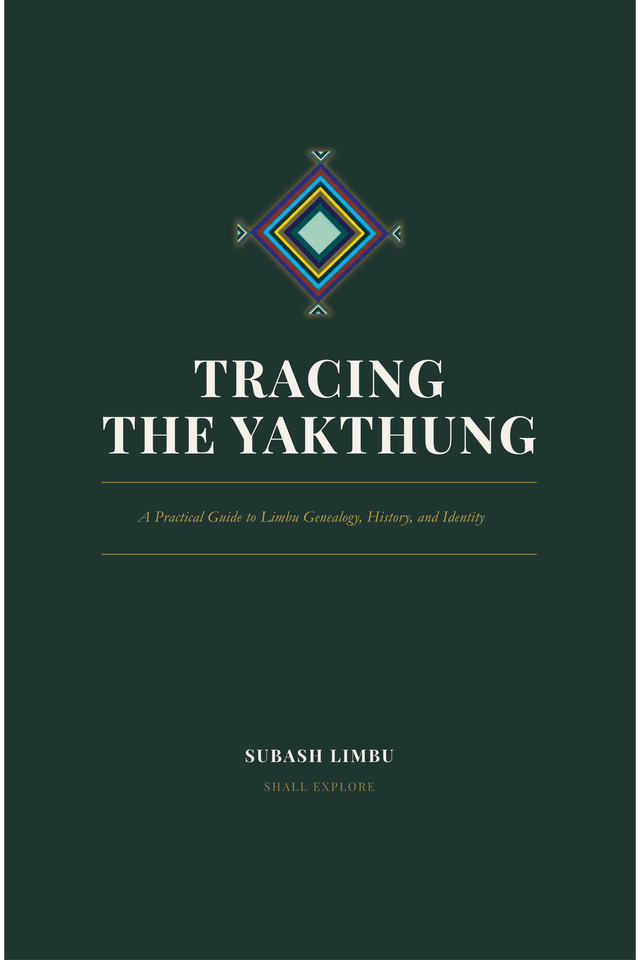

Wildlife
Leopard sign, rare birds, and the field craft of finding what most people walk past in Taplejung's forest corridor.
27.35°N 87.69°E — TAPLEJUNG, NEPAL
Author of Tracing the Yakthung.
Creator of Shall Explore.
Yakthung heritage, Himalayan wildlife, and the corners of Nepal that rarely make it onto a map.
About
Subash makes films and writes books. He documents wildlife in the field, records oral history before it's lost, and puts names back on places that had them long before any map did. Eastern Nepal is where the work started, and where most of it still points.
The Book

Forty pages tracing Yakthung/Limbu genealogy, the 10 Thum and 29 Thum systems of Limbuwan, and the oral tradition carried down through the Mundhum. Written for the diaspora and for anyone trying to hold onto a name their family almost lost.
Shall Explore
Leopard sign, rare birds, and the field craft of finding what most people walk past in Taplejung's forest corridor.
Limbu/Yakthung oral history, clan genealogy, and the indigenous names for places long before they had other ones.
Remote Himalayan terrain and underexplored routes, filmed the way they're actually walked.
Every place has a name.
Not everyone got to keep theirs.
Connect
Collaborations, press, or Limbu heritage research — reach out directly.
Email Subash